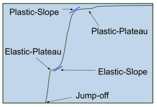
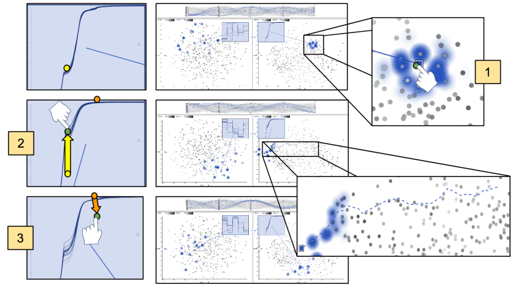
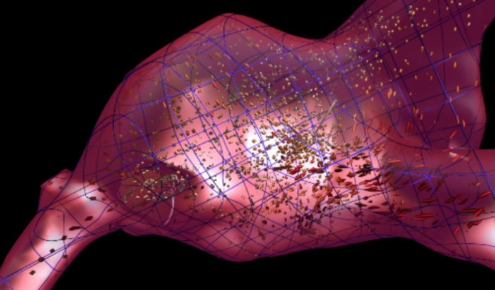

My research combines interaction techniques from the scientific visualization and visual analytics disciplines to study high-dimensional parameter spaces. I ask the question:
"How can we add intuition to complex high-dimensional systems using interactive visualization?"
With the emergence of Virtual Reality (VR) and Augmented Reality (AR), perhaps soon it will be common practice for scientists and engineers to immerse themselves in their data, directly manipulating variables of interest. Imagine painting stress on a medical device, twisting a pathline to increase vorticity in a fluid, and stretching a solid object to change displacement. These organic, user-defined actions allow subject matter experts to ask questions of ill-defined systems in the same way we naturally experience reality.
To solve these types of problems, I explore ensemble visualization, parameter space analysis, semantic interaction, uncertainty, immersive environments, remote visualization, and high performance computing.
Please review my projects for more information on how these research areas fit together.
|
|
I currently have 20+ years of professional and teaching experience. This diverse background has fostered strong verbal, listening, and writing skills, complemented with a desire to teach others.
My professional life began at Dell Technologies where I worked as a website programmer for software and peripherals and search. After four years, I decided to pursue research on distributed systems with a job at Accenture Technology Labs. I then worked as a software contractor, a website designer, and finally as a graphics programmer before becoming a PhD student.
Throughout my professional career, occasionally between jobs, I have also pursued teaching. I started as a mathematics tutor as an undergraduate at Oklahoma State University. Later, I was trained by an alternative certification program to become a high school teacher in the state of Texas. It was in Minnesota, however, where I taught my first high school technology class. Naturally, as a PhD student I have had the opportunity to be a teaching assistant for several key graduate and undergraduate level classes.
For more information, please see my professional and teaching experience.
This project worked towards understanding which properties of a cell and its environment are involved in cell movement. Cancer cell migration is a problem that is both high dimensional (i.e. has many variables like stiffness, motors, clutches, traction forces, actin flow patterns, etc...) and has complex spatial temporal relationships (i.e. cell body, actin, and arms).
Using the c++ version of the Cell Migration Simulator, developed in collaboration with the interactive visualization lab and David Odde's biomedical engineering lab, we investigated how to explore parameter relationships. The parameter space is large and nonlinear with complex spatial features. See my Doctoral Dissertation for results.
In collaboration with the Data Science at Scale team at Los Alamos National Lab, I worked for two summers developing interactive visualization techniques for understanding the high-dimensional space in shock physics applications.
Shock physics is a research area in material science that uses high powered gas guns or lasers to shock a material of interest. The resulting elastic and fluid reactions provide detailed information about the strength of materials, giving insight into physics and the possibility of creating new material phases (e.g. stronger materials).
View ProjectDrag and Track is a technique for contextualizing instances of an ensemble (i.e. understanding a simulation's relationship to set of simulations). This technique uses direct manipulation, prediction, and search capabilities, allowing users to intuitively explore relationships between inputs and outputs by simply manipulating curves and points.  For example, in the shock physics application, there is a feature called the elastic plateau. A user can simply drag the elastic plateau and see how the other input and output values change. It also provides uncertainty visualization to get a better view of whether the prediction should be trusted in the context of the ensemble.
Cinema: Bandit explores shock physics experimental data using parallel coordinate plots and multiple linked views. This allows material scientists to view parameter relationship along side x-ray diffraction images, superimposed velocimetry curves, and integration curves. By modifying the Cinema Component infrastructure, we were able to integrate Cinema: Bandit with the Stanford Linear Accelerator Center (SLAC) using the LCLS psana system. As experiments were conducted, the data was automatically processed and results were streamed into Cinema:Bandit.
In order to understand the complex input and output space for cardiac lead design, we implemented an instance comparison tool called Bento Box. This tool allows users to interactively explore and compare spatially relevant features. Bento Box is a virtual reality visualization and 3D user interface technique for comparative analysis of data ensembles, such as this set of 10 time-varying simulations of blood flow around a cardiac lead in the right atrium of the heart. Each column shows a simulation with different parameters, here varying the length and stiffness of the lead. Each row shows a different view of the data. The top row is a zoomed-out overview. Users add additional rows of complementary, zoomed-in views during analysis for memory intensive fluid-structure interaction simulations in virtual reality.
Visualizing complex fluid flow in virtual reality (VR) is a necessary part of state-of-the-art climate study, physical system design, and biomechanical engineering. However, the most effective way to support real-time advection and rendering of hundreds of thousands of multi-dimensional particles on multiple high-framerate stereo displays remains an open challenge. Particle Flow is particle advection and rendering system for addressing this challenge in the context of current graphics hardware.
View ProjectWe drive a 4-wall Cave VR environment from a single computer with multiple graphics cards, and we explore the potential of hardware configurations, which can include both traditional graphics processing units (GPUs) and general-purpose GPUs, for scientific visualization.
The approach uses a GPU-based implementation of 4th order Runga-Kutta integration to update the space-time state of each particle as it moves through vector fields of interest to scientists, typically pre-computed with offline high-resolution simulations. The particles are then displayed using GPU shader programs that support interactive head-tracked stereoscopic rendering in our 4-wall Cave driven by 8 projectors attached to a single computer with 4 graphics cards. We report upon the feasibility of this approach for use in exploring a large-scale computational simulation of a hurricane with visualizations that include hundreds of thousands of animated particles.
In order to interact with visualize large simulation data sets with state of the art in graphics technology I created the Sandbox Graphics Engine. It focuses on high performance graphics rendering across multiple shared contexts and devices. The Sandbox is an entity component framework written in C++ using Vulkan and OpenGL.
The ultimate goal of this project is to enable rendering on multiple immersive display types (Desktop / Web / Cave / Head mounted display) while efficiently minimizing data transfer and flexible interaction.
View ProjectOne important rule in visualizing large scientific data sets is "Do not move the data." The data is often too large to efficiently move for real-time interactive graphics. At the same time most remote data access is handled over the web. This project integrates the high-performance of c++ back end (e.g. off-screen rendering using Vulkan) where the data is stored with a javascript front end. The application uses web sockets to communicate over the network to the super computer also enabling simulation steering. The example uses P3.js as a simple graphics library for interaction.
View ProjectThe purpose of my cloth simulation was to compare the features of multiple simulation integration schemes. In this solution I implemented and investigated explicit Euler, simi-implicit Euler, explicit Runga-Kutta 4th Order (RK4), and implicit backwards Euler. implicit backwards Euler was definitely the most stable. Surprisingly, simi-implicit Euler, in terms of stability, performed almost as well as RK4.
As a feature, I also explored interaction techniques in the HTC Vive using MinVR, an open source C++ VR library that I helped develop. Using a virtual sphere as a cursor, it was easy to manipulate the cloth through sphere collisions.
View ProjectFor a physics based animation class, I imlemented a CPU Finite Element Method (FEM) simulator in C++. It explores using explicit and implicit integration methods. A GPU version has been started.
View ProjectFor a graduate level graphics class, I implemented a ray tracer that handles lighting, reflection, refraction, and depth of field. I am very proud of this picture of a deer overlooking Lake Tahoe.
View ProjectFor exploring user interaction, I have used the Open Haptics library to interact with a Phantom device. This allows users to feel forces. For example, users can pull the edge of a cell arm to manipulate a simulation.
To get experience creating our own haptics device, a friend, David Swanson, and I created a virtual button (pictured on the left). Using the HTC Vive, and our active haptics device we were able to virutally touch and push buttons. Moving a motorized plate while our hand moved (location based), provided the feeling of force feedback.